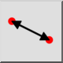
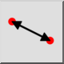
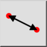
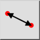

Distance d'un point à un point
Barre d'outil / icône :
 

Menu : Infos > Distance d'un point à un point
Raccourci : I, P
Commandes : infodist | ip
Ceci est une traduction automatique.
Barre d'outil / icône :
 

Menu : Infos > Distance d'un point à un point
Raccourci : I, P
Commandes : infodist | ip
Cet outil mesure la distance exacte entre deux points donnés par l'utilisateur.